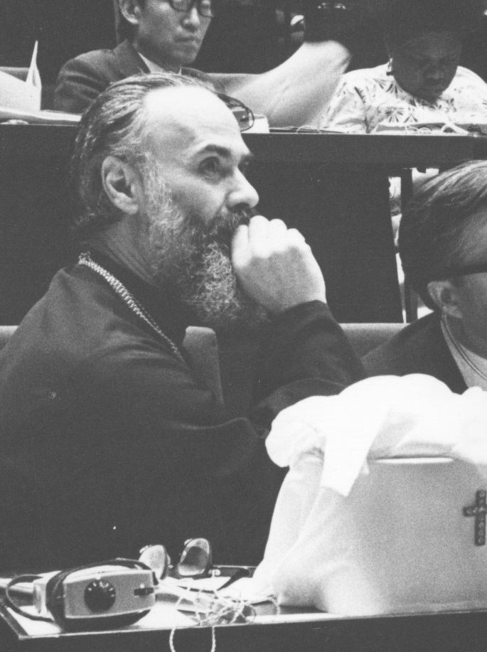
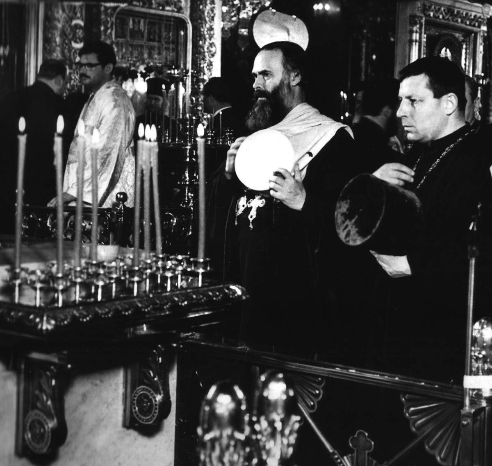
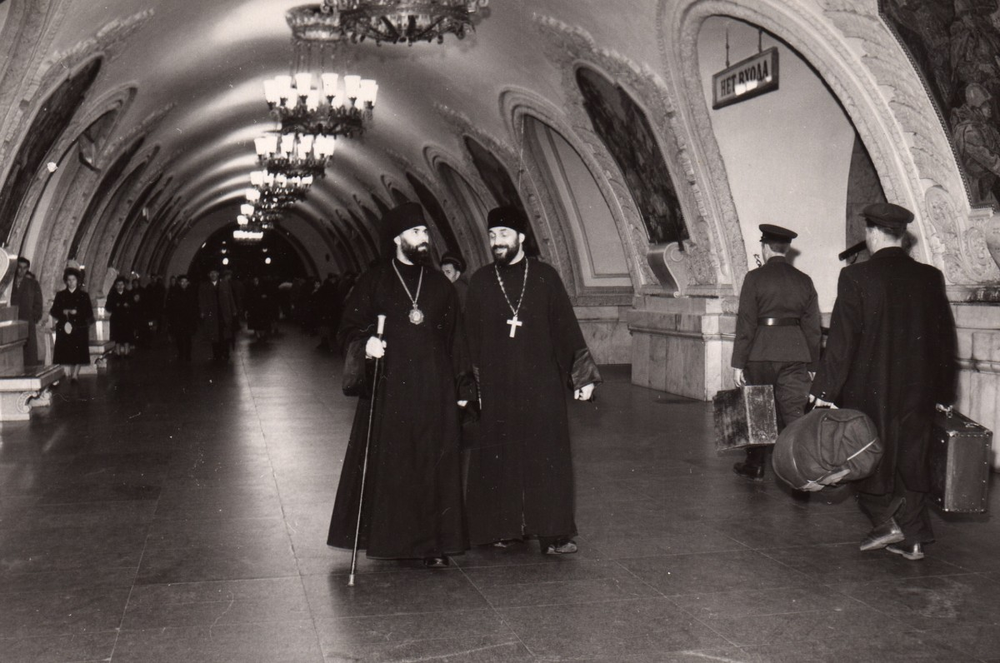

13-15 September 2019
The 7th International Conference dedicated to the legacy of Metropolitan Anthony

The aim of the conference is to consider how our belief in the Incarnate God, who came down to earth, lived among people, was crucified and rose from the dead affects our everyday life, our family life, our choice of profession, our attitude to education, to society, to culture, to time, to the world around us, to illness and to death.
At our conferences we try to share our own experience but also to relate it to the legacy of metropolitan Anthony. There are many who witness that meeting him, one could feel his otherness and centeredness on Christ even in small everyday things. However his understanding of what makes a Christian is unusual in some aspects. He points out that our major sin is superficiality, he speaks about depth, attentiveness, responsibility, creativity, active life (as contrasted to re-active or to being acted upon), of creative chaos, belief in people (including oneself). He talks about human wisdom based on previous experience and about God’s wisdom which is eschatological, about our actions which are defined by the object instead of being centered on the person who is acting. How much do his views and thinking correspond to our experience and understanding? How can we benefit from the legacy of this man of prayer?
All are welcome. Please send summary of your proposed talks (around 2000 letters) before 15 July to fondmas1@yandex.ru
Talks will be given by priests, theologians, psychologists, journalists, writers, doctors, scientists, teachers and other speakers.
On Friday, September 13th a journalist of St Petersburg Radio “Grad Petrov” L. Zotova will lead a discussion “How to establish my relationship with God in everyday life?”
Popular discussion workshops will take place September, 14th. Among the workshop leaders there are priests and lay people well known to our audience.
Special workshops for young people 7-9 and 10-14 years of age will be organized. Their parents are supposed to attend other workshops.
On Sunday, September 15th, three round tables on the concept of ministry will take place at the same time. Please, make your choice when registering for the conference:
Admission is free but you are strongly advised to fill in the registration form.
Alexander Solzhenitzyn House for Russians Abroad,
2, Nizhnaya Radischevskaya, Moscow
Tel, WhatsApp: +7 965 1306326
Languages: English, Russian
archpr. V. Arkhipov (Novaya Derevnya)
G. Bazikin (Moscow)
pr. A. Belyaev (Samara)
N. Bolshakova (Riga)
archpr. A. Borisov (Moscow)
B.S. Bratus (Moscow)
hierom. Feodorit (Senchukov) (Moscow)
hierom. Giovanni (Guaita) (Moscow)
F. de Graaf (Moscow)
pr. D. Herescu (Cambridge)
archpr. Ch. Hill (Moscow)
N.V. Inina (Moscow)
archpr. V. Kakhovsky (Moscow)
archpr. Kirill Kaleda (Moscow)
T. Kasatkina (Moscow)
T. Krasnova (Moscow)
M.A. Kucherskaya (Moscow)
T. Larsen (Moscow)
K. Matsan (Moscow)
D. Nikitin (Moscow)
E. Nikitina (Moscow)
L. Other (Stourbridge)
Ya. Rodina (Moscow)
archpr. S. Rybakov (Samara)
E.A. Savina (Moscow)
I.P. Scorer (Exeter)
protod. P. Scorer (Exeter)
T.M. Semchishina (Moscow)
A.I. Shmaina-Velikanova (Moscow)
archpr. D. Sizonenko (St-Peterburg)
E. Theokritoff (Cambridge)
J-F. Thiry (Moscow)
B.A. Voskrsensky (Moscow)
L. Zotova (St-Petersburg)